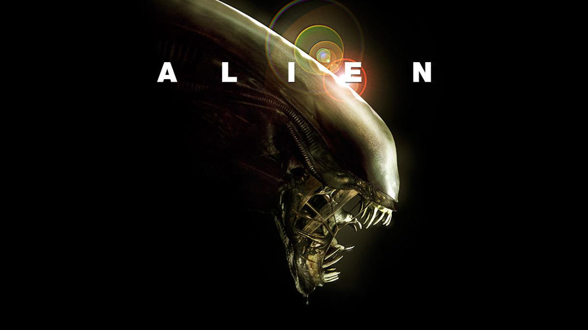

The Alien, also known as the Xenomorph, is a fictional extraterrestrial species that serves as the primary antagonist in the Alien film series.
It is known for its terrifying appearance, acid blood, and relentless predatory behavior.
A website I use frequently to learn more about characters is Xenomorph - Aliens Fanon

The Xenomorph has a unique life cycle that begins with an egg, which hatches into a facehugger. The facehugger attaches itself to a host organism, implanting an embryo that later bursts out as a chestburster, eventually growing into the adult Xenomorph.
The Xenomorph is known for its adaptability and intelligence, making it a formidable predator. It has been depicted in various forms throughout the Alien franchise, each with its own characteristics and abilities.